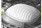
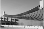

2018年
問題94建築物の構造に関する次の記述のうち，最も不適当なものはどれか．
（1）折板構造の応力は，主として面内力である．
（2）トラス構造の部材に生じる応力は，曲げモーメントとせん断力である．
（3）壁式構造の組積式には，れんが造，補強コンクリートブロック造がある．
（4）空気膜構造は，膜面に張力を与えている．
（5）制振構造は，建物の揺れを制御し，低減しようとする構造である．
2018年
問題94正解（2）頻出度AAA
トラスの部材には軸方向力だけが働く．
細長い部材（構造力学では"はり"と呼ぶ）は曲げに弱く，折れやすい．トラスでは，部材の接合部を回転自由なピン接点とし，さらに倒れたり，ひしゃげないように部材を3角形に組む．このことによって，トラスでは，力の合成・分解の法則に従って，応力を軸力（軸方向力．圧縮力又は引張り力）に変換し，部材に曲げモーメント・せん断力は発生しない．そのためにトラスは細い部材で，軽量で強い構造が可能で，大スパン(柱と柱の間が大きい)構造や高層建築物に適した構造である（梁と柱を剛に接合する，例えば鉄筋コンクリート造のラーメン構造では，曲げモーメントなどに耐えるだけの太い梁や柱を必要とする）（2018-94-1図参照）．
トラスはスカイツリーなどの高層建築物も可能にした建築学上の偉大な発明である．
-(1) ，-(3) ，-(4) 主な構造形式は2018-94-1表参照．
| 名称 | イメージ | 特徴 |
| ラーメン構造 |
|
柱と梁が剛で接合された骨組．剛節骨組みとも呼ぶ．ドイツ語のRahmenからラーメン構造と呼ばれる．応力としては，柱には曲げモーメント，せん断力，軸方向力，梁材には曲げモーメントとせん断力が生じる．山形ラーメン，異形ラーメン，変断面ラーメン等がある． |
| トラス構造 |
|
部材を三角形状にピン接合した単位を組み合わせて得られる構造体骨組．接点に作用する荷重を部材軸方向の力に分散して支持する．応力は軸方向力のみ生じる構造である．大スパン空間に適応する． |
| アーチ構造 |
|
全体をアーチ状に構成する構造である．応力は曲げモーメント，せん断力，軸方向力が生じる構造である． |
| シェル構造 |
|
卵の殻や貝殻等のように薄い曲板により，力学特性を生かして，種々の曲板形状により構成された構造である．ほとんどの応力を面内力（引張力，圧縮力）として伝達させる構造である．大スパンに適している． |
| 壁式構造 |
|
梁，柱がなく，壁だけで構成される構造．構造体の外力に対する主要抵抗要素が板状の部材で構成されている．壁式鉄筋コンクリート構造は集合住宅によく用いられる． |
| 折板構造 |
|
折り曲げ構造のことで，折り紙のように折り曲げ多面体状の架構を形成し，主として面内力によって外力に抵抗する構造．面板による筒状あるいは多面体状の架構を形成する． |
| 空気膜構造 |

|
構造体の内部と外部の空気圧の差により，膜面に張力，剛性を与え形状を得る構造形式．東京ドームが代表例． |
| 吊り構造 |

|
構造物の主な部分を支点から吊ることにより 張力となるような応力状態を作り出す形式．例：代々木体育館（第一，第二とも） |
-(5) 制振構造（2018-94-2表参照）は，地震に限らず風などによる建物の揺れも緩和するので，骨組み・仕上げ材（コンクリートやシールなど）の劣化（ひびや亀裂）を抑止して，建築物の寿命を延ばす効果があるとされる．
| 耐震構造 | 免震構造 | 制振構造 | |
| パッシブコントロール | アクティブコントロール | ||
 |
 |
 |
 |
| 建物を地震に耐えられるだけ頑丈に作る． | 地盤と建物の間に免振装置を挿入し，上階に伝わる振動を小さくする． | 建物各階各所にエネルギーを吸収する制振ダンパーを配置し，建物の振動を低減する． | 建物の屋上に錘おもり（装置）を設置し，錘が建物の振動を低減させる方向に動作し，建物の振動を低減する． |
| 柱や梁を太くし，つなぎ目を頑丈にした構造 | 各種積層ゴム（アイソレータ）＋オイルダンパー | オイルダンパー | アクティブ制振装置 |